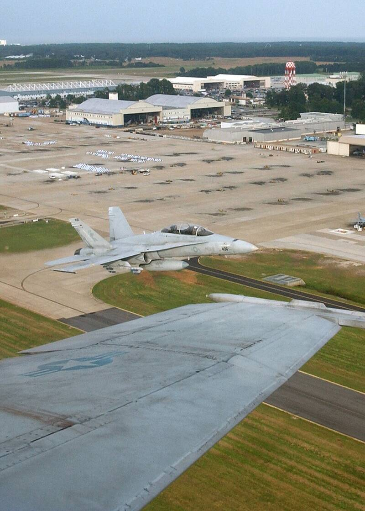

NAS Oceana
Virginia Beach, VA

Home base of the F/A-18 squadrons whose pilots reported near-daily UAP encounters in 2014 and 2015 off the East Coast. 1
Open in the interactive Watcher
Related
Sources
- Naval Air Station Oceana Wikipedia
Virginia Beach, VA

Home base of the F/A-18 squadrons whose pilots reported near-daily UAP encounters in 2014 and 2015 off the East Coast. 1
Open in the interactive Watcher